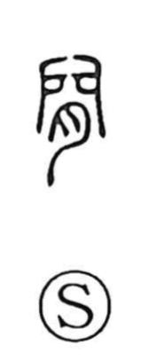

間

Kun: aida, ma | On: kan, ken
between ・ interval ・ space ・ gap ・ time ・ opening ・ calm ・ quiet
Explanation
間 was earlier written 閒, enclosing a 月-shaped form within 門. The inner shape represents sacrificial meat. Bronze variants place the meat above the gate or put 外 inside it, pointing toward a rite at the entrance to an ancestral shrine.
Meat was offered and prayers performed at this threshold. The particular ceremony remains uncertain, but its location separates the sacred interior from the space outside. This gives the connection with an intervening space and with keeping the two sides apart.
間 names a gap, an interval, a room, or the distance between things. Applied to time, it is the period between events. Other uses concern quiet withdrawal, repose, concealment, and acting secretly or awaiting an opportunity.